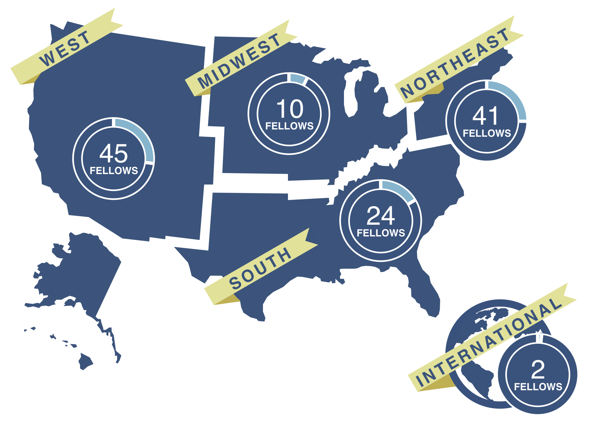

The Presidential Innovation Fellows program brings the principles, values, and practices of the innovation economy into government through the most effective agents of change we know: our people.
This highly-competitive program pairs talented, diverse technologists and innovators with top civil-servants and change-makers working at the highest levels of the federal government to tackle some of our nation’s biggest challenges. These teams of entrepreneurs-in-residence and government experts take a user-centric approach to issues at the intersection of people, processes, products, and policy to achieve lasting impact at startup speed.
Learn more
Leveraging outside industry expertise to work within government
Recruiting industry leaders to serve as change agents
